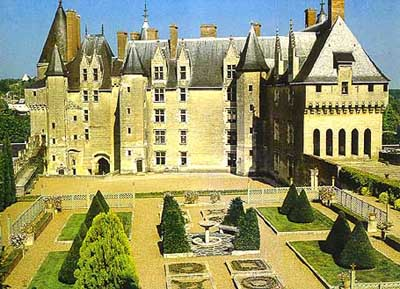

В замке запечетлен образ его создателя - грозного Фулька Нерры, графа Анжуйского, прозванного в свое время "Черным соколом". 
Это был классический тип феодального разбойника: жестокость, вероломство и цинизм, поставленные на службу его ненасытному желанию власти, сочетались у него с суеверной набожностью, пределы которой не знали границ и стали достоянием легенд. Он обладал также выдающимися качествами стратега и политического деятеля, которые обеспечили пятьдесят лет успеха этому основателю анжуйской династии.
В правление Гуго Капета Фульк захватил владения Эда I, графа Блуа и Тура, и воздвиг эту крепость как опорную точку на высоком утесе, омываемом водами Луары и Румер. После его смерти продолжалось непреодолимое восхождение дома Анжу, получившее свое кульминационное завершение в 1154 году, когда граф Генрих Анжуйский, прозванный Плантагенетом, был коронован королем Англии.
При этом правнуке Вильгельма Завоевателя, взявшим в жены Элеонору Аквитанскую, Ланжэ становится аванпостом его огромных французских владений, которые включали Долину Луары, Нормандию и Аквитанию.